2023年北京市中考地理真题 原卷解析
2023年北京市初中学业水平考试
地理试卷
第一部分
本部分共25题，每题1分，共25分。在每题列出的四个选项中，选出最符合题目要求的一项。
传统节日是传承中华优秀传统文化的重要载体。图为我国某地四大传统节日景观及习俗简笔画。读图，完成下面小题。
1. 图中景观及习俗，与传统节日对应正确的是（ ）
A. ①——春节B. ——②端午节C. ——③清明节D. ——④中秋节
2. 图中自然景观差异的形成，主要是由于（ ）
A. 地球运动B. 地球形状C. 海陆变迁D. 海陆分布
【答案】1. B 2. A
【解析】
【1题详解】
图中①为清明节，踏青郊游，亲近自然。②为端午节，吃粽子，赛龙舟。③为中秋节，赏月亮，吃月饼。④为春节，辞旧迎新，贴春联，守岁，拜年。综上所述，B正确，ACD错误，故选B。
【2题详解】
图中不同节气自然景观差异，是由于地球公转运动导致了四季变化，春季百花争艳，夏季绿树成荫，秋季凉风习习，冬季大雪纷飞，A正确。与地球形状、海陆变迁、海陆分布无关，BCD错误。故选A。
【点睛】地球公转产生的现象有：①正午太阳高度的变化②昼夜长短的变化③四季的更替④五带的划分。
等高线地形图是认识地表高低起伏的地理工具。图为某地等高线地形图。读图，完成下面小题。
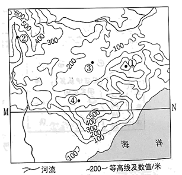
3. 图中（ ）
A. ①地海拔为300米B. ②地地处山谷
C. 在③地可东眺大海D. ④地坡度最大
4. 沿MN绘制的地形剖面示意图是（ ）
A.
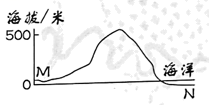
B. 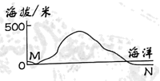
C.
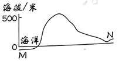
D. 
【答案】3. B 4. A
【解析】
【3题详解】
读图可知，图中等高距为100米，①地海拔为400-500米，A错误。②地等高线向高处凸出，地处山谷，发育河流，B正确。图中没有指向标和经纬网，可以根据“上北下南左西右东”来确定方向，在③地向东眺望，被①地阻挡，不能看到大海，C错误。④地等高线稀疏，坡度小，D错误。故选B。
【4题详解】
读沿MN绘制的地形剖面示意图，M处为陆地，海拔较高，N处为海洋，海拔低，排除CD；MN穿越山峰，海拔高于500米，排除B，故选A。
【点睛】等高线闭合，且数值从中心向四周逐渐降低的为山峰；等高线向海拔较低处凸出的为山脊，也叫分水岭；等高线向海拔较高处凸出的为山谷，发育河流；等高线重合的为陡崖，适合攀岩运动；位于两个山顶之间，地势较为低洼，是鞍部。等高线密集，坡度陡，攀爬难度大；等高线稀疏，坡度平缓，攀爬难度小。
分析降水量分布状况是认识区域差异的重要内容。图为中国年降水量分布和国地降水量柱状图。读图，完成下面小题。
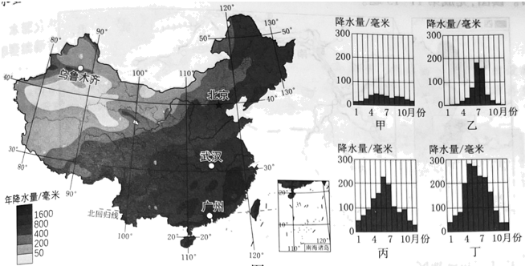
5. 我国年降水量（ ）
A. 随纬度升高而逐渐增加B. 沿北纬40°线自东向西递增
C. 沿东经120°线自北向南递减D. 自东南沿海向西北内陆递减
6. 四地中（ ）
A. 甲地降水季节变化最大B. 乙地雨季最长
C. 丙地7月降水量最大D. 丁地年降水量最大
7. 乙地为（ ）
A. 乌鲁木齐B. 北京C. 武汉D. 广州
【答案】5. D 6. D 7. B
【解析】
【5题详解】
受东南季风的影响，读图可知，我国年降水量自东南沿海向西北内陆递减，故选D。
【6题详解】
四地中，甲地是乌鲁木齐，属于温带大陆性气候，降水稀少，降水季节变化较小，A错误。乙地是北京，雨季最长的是丁地广州，B错误。丙地6月降水量最大，C错误。丁地广州年降水量最大，D正确。故选D。
【7题详解】
乙地夏季高温多雨，冬季寒冷干燥，为温带季风气候，是北京，B正确。乌鲁木齐是温带大陆性气候，武汉和广州为亚热带季风气候，ACD错误。故选B。
【点睛】气候类型的判读三步法：以温（最高温）定球、以温（最低温）定带、以水（降水的季节分配和降水量）定型。
长城是我国现存规模最大的文化遗产。图为我国长城分布示意图。读图，完成下面小题。
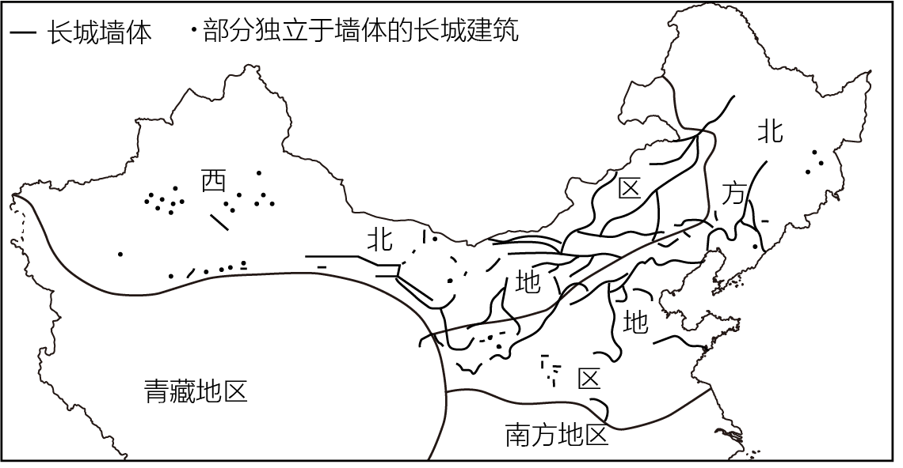
8. 长城主要分布在（ ）
A. 北方地区和南方地区B. 南方地区和青藏地区
C. 西北地区和北方地区D. 西北地区和青藏地区
9. 在长城上可能看到的自然景观有（ ）
①沙漠②草原③大海④椰林
A. ①②③B. ①②④C. ①③④D. ②③④
10. 我国正在规划建设长城国家文化公园，这有助于（ ）
①恢复长城的军事防御功能②维护长城沿线地区生态环境
③保护长城沿线的文化遗址④了解我国多民族交融的历史
A. ①②③B. ①②④C. ①③④D. ②③④
【答案】8. C 9. A 10. D
【解析】
【8题详解】
读图可知，长城主要分布在西北地区和北方地区，故选C。
【9题详解】
长城主要分布在西北地区和北方地区，主要为温带大陆性气候，草原和荒漠广布，长城上可能看到的自然景观有：①沙漠、②草原，在山海关等处的长城还可以见到③大海，①②③正确。④椰林主要分布在我国低纬度的热带地区，长城没有穿越，④错误。故选A。
 10题详解】
10题详解】
我国正在规划建设长城国家文化公园，这有助于：②维护长城沿线地区生态环境、③保护长城沿线的文化遗址、④了解我国多民族交融的历史，②③④正确。对于现代战争来说，恢复长城的军事防御功能意义不大，①错误。故选D。
【点睛】根据区域特征的不同，综合地理位置、自然地理、人文地理的特点，可以把我国划分为四大地理区域，即北方地区、南方地区、西北地区和青藏地区。其中，秦岭、淮河一线是北方地区和南方地区的分界线。大兴安岭-阴山-贺兰山为北方地区和西北地区的分界线。我国青藏地区和西北地区，北方地区，南方地区的分界线，大致以第一级阶梯和第二级阶梯的分界线。
长江三角洲地区对长江流域乃至全国具有辐射带动作用。图为长江三角洲地区简图。读图，完成下面小题。

11. 长江三角洲地区（ ）
A. 地处长江下游地区，濒临南海B. 依托长江干流，联系京津冀地区
C. 地处江海交汇之地，港口众多D. 依托京杭运河，联系粤港澳地区
12. 该地区的沪宁杭工业基地（ ）
A. 矿产资源丰富，以重工业为主B. 以首都为核心，科研力量雄厚
C. 工业结构完整，国际竞争力强D. 邻近香港澳门，消费市场广阔
13. 为提升辐射带动作用，该地区应进一步（ ）
①完善基础设施建设②提升科技创新能力
③推进生态环境治理④增加清洁能源输出
A. ①②③B. ①②④C. ①③④D. ②③④
【答案】11. C 12. C 13. A
【解析】
11题详解】
长江三角洲地区地处长江下游地区，濒临东海和黄海，A错误。长江三角洲地区依托长江干流，不能联系京津冀地区，B错误。长江三角洲地区地处江海交汇之地，港口众多，交通便利，C正确。依托京杭运河，联系京津冀地区，D错误。故选C。
【12题详解】
该地区的沪宁杭工业基地矿产资源贫乏，以综合性工业为主，A错误。京津冀地区以首都为核心，科研力量雄厚，B错误。沪宁杭工业基地工业结构完整，国际竞争力强，C正确。珠江三角洲地区邻近香港澳门，消费市场广阔，D错误。故选C。
【13题详解】
为提升辐射带动作用，沪宁杭工业基地应进一步：完善基础设施建设、提升科技创新能力、推进生态环境治理，①②③正确。当地经济发达，能源需求量大，还要跨区域调入能源，故不能增加清洁能源输出，④错误。①②③正确，故选A。
【点睛】我国四大工业基地：我国北方的重工业基地--辽中南工业基地；我国北方最大的综合性工业基地--京津唐工业基地；我国最大的综合性工业基地--沪宁杭工业基地；我国对外开放前沿阵地，利用侨乡优势，发展外向型经济，以轻工业为主的工业基地--珠江三角洲工业基地。
我国是柑橘种植的起源地之一。柑橘通过多种途径向外传播。图为我国柑橘传播路线示意图。读图，完成下面小题。

14. 我国柑橘的传播（ ）
A. 向西到欧洲B. 向东到非洲
C. 经太平洋到大洋洲D. 经印度洋到南美洲
15. 柑橘种植区（ ）
A. 南半球多于北半球B. 西半球多于东半球
C. 主要分布在北温带D. 集中在高纬度地区
16. 柑橘的传播可以（ ）
A. 增加原产地的年降水量B. 改变传入地的热量条件
C. 促进世界农业技术进步D. 消除地域发展水平差异
【答案】14. A 15. C 16. C
【解析】
【14题详解】
读图可知，我国柑橘的传播向西到欧洲地中海沿岸，A正确。向西到非洲，B错误。经大西洋、印度洋到大洋洲，C错误。经大西洋到南美洲，D错误。故选A。
【15题详解】
读图可知，柑橘种植区北半球多于南半球，东半球多于西半球，AB错误。柑橘种植区主要分布在北温带，C正确。集中在中纬度地区，D错误。故选C。
【16题详解】
柑橘的传播可以促进世界农业技术进步，C正确。不能增加原产地的年降水量、改变传入地的热量条件、消除地域发展水平差异，ABD错误。故选C。
【点睛】划分东、西半球的分界线是20°W和160°E两条经线组成的经线圈。20°W以东到160°E是东半球，20°W以西到160°E是西半球。南、北半球的分界线是赤道，赤道以北是北半球，赤道以南是南半球。纬度0°～30°为低纬度，30°～60°为中纬度，60°～90°为高纬度。
法拉吉和都江堰均是世界灌溉工程遗产。法拉吉将山泉水和地下水通过水渠引到山麓地带的村庄，用于生产生活。都江堰通过渠、堰调节岷江水，引水保障成都平原的农业生产。图为亚洲气候类型分布图（局部）。读图，完成下面小题。
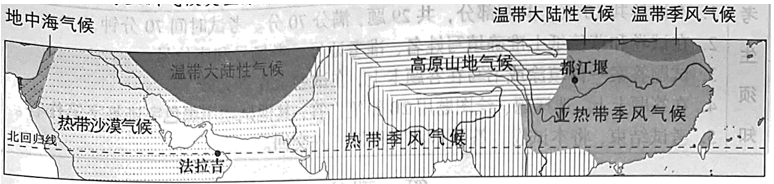
17. 法拉吉和都江堰所在地区的气候类型分别是（ ）
A. 热带沙漠气候、亚热带季风气候B. 地中海气候、亚热带季风气候
C. 温带大陆性气候、热带季风气候D. 热带沙漠气候、高原山地气候
18. 两工程均（ ）
A. 因全年降水稀少而引水B. 通过减少蒸发避免水资源浪费
C. 因降水季节不均而蓄水D. 通过调配水资源提高利用效率
19. 两工程的主要作用是（ ）
A. 防风固沙B. 调节气候C. 灌溉农田D. 蓄水发电
【答案】17. A 18. D 19. C
【解析】
【17题详解】
读图可知，法拉吉位于阿拉伯半岛，属于热带沙漠气候，都江堰位于四川，属于亚热带季风气候，故选A。
【18题详解】
都江堰位于四川，属于亚热带季风气候，夏季高温多雨，A错误。都江堰目的不是为了减少蒸发，B错误。法拉吉终年高温干旱，不是因降水季节不均而蓄水，C错误。两个工程都是通过调配水资源提高利用效率，D正确。故选D。
【19题详解】
法拉吉将山泉水和地下水通过水渠引到山麓地带的村庄，用于生产生活。都江堰通过渠、堰调节岷江水，引水保障成都平原的农业生产。故两工程的主要作用是灌溉农田，C正确。跟防风固沙、 调节气候 、 蓄水发电无关，ABD错误，故选C。
【点睛】都江堰是当今世界年代久远、唯一留存、以无坝引水为特征的宏大水利工程。它充分利用当地西北高、东南低的地理条件，根据江河出山口处特殊的地形、水脉、水势，乘势利导，无坝引水，自流灌溉，使堤防、分水、泄洪、排沙、控流相互依存，共为体系，保证了防洪、灌溉、水运和社会用水综合效益的充分发挥。它最伟大之处是建堰2250多年来经久不衰，而且发挥着愈来愈大的效益。
巴西伊瓜苏国家公园和阿根廷伊瓜苏国家公园内动植物种类丰富，分别被列入《世界遗产名录》。因当地居民启用原本关闭的道路，1999年巴西伊瓜苏国家公园面临从名录中被删除的危险，2001年该道路重新关闭。图为巴西伊瓜苏国家公园手绘图。读图，完成下面小题。
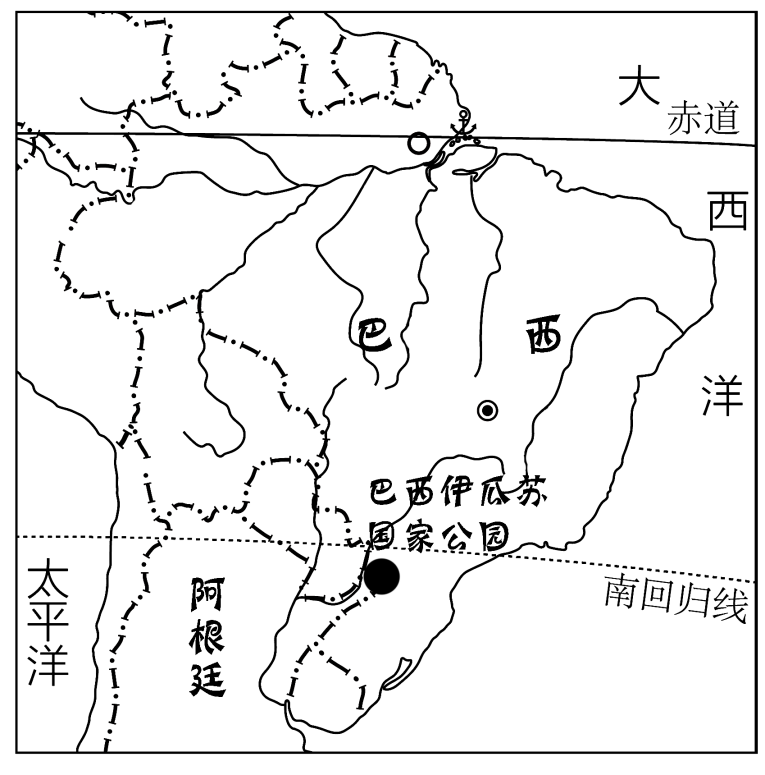
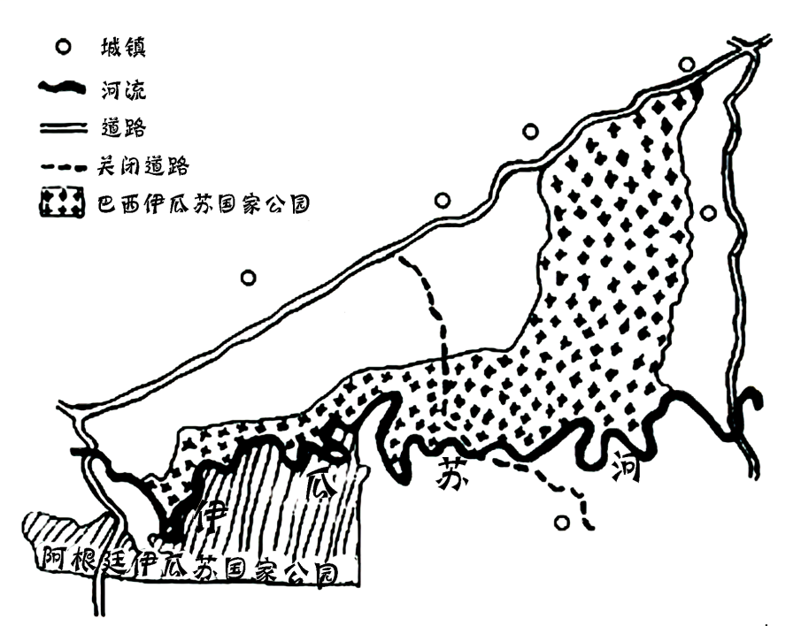
20. 巴西伊瓜苏国家公园（ ）
A. 位于巴西的西南部B. 地处热带沙漠气候区
C. 内部被伊瓜苏河分割D. 内部城镇多、人口稠密
21. 重新关闭穿越国家公园的道路，可以（ ）
①保护动物的迁徙通道②促进巴西发展边境贸易
③减少盗伐与盗猎现象④改善动植物的生存环境
A ①②③B. ①②④C. ①③④D. ②③④
①②③B. ①②④C. ①③④D. ②③④
22. 为保护动植物资源，该国家公园应（ ）
A. 加强科学研究力度，改变植物生长习性B. 健全国际合作机制，畅通跨境生态廊道
C. 扩建周边所有城镇，限制动物活动范围D. 大力开发旅游项目，拓宽经济收入渠道
【答案】20. A 21. C 22. B
【解析】
【20题详解】
读图可知，巴西伊瓜苏国家公园位于巴西的西南部，地处热带草原气候区，伊瓜苏河位于伊瓜 苏国家公园的边缘，内部城镇少，人口稀疏。A正确，BCD错误，故选A。
【21题详解】
重新关闭穿越国家公园的道路，可以减少人为的干扰，①保护动物的迁徙通道、③减少盗伐与盗猎现象、④改善动植物的生存环境，①③④正确。重新关闭穿越国家公园的道路，不利于促进巴西发展边境贸易，②错误。故选C。
【22题详解】
为保护动植物资源，该国家公园应健全国际合作机制，畅通跨境生态廊道，B正确。加强科学研究力度，改变植物生长习性、扩建周边所有城镇，限制动物活动范围、大力开发旅游项目，拓宽经济收入渠道都会影响当地原始生态环境，加大对生态环境的破坏，不利于保护动植物资源，ACD错误。故选B。
【点睛】伊瓜苏国家公园处于玄武岩地带。跨越阿根廷和巴西国界，高80米，长度上延伸至2700米的世界上最壮观的瀑布之一伊瓜苏瀑布就位于这个地区的中心。瀑布产生的云雾滋润着葱翠植物的生长。许多小瀑布成片排开，层叠而下，激起巨大的水花。周围生长着200多种维管植物的亚热带雨林，许多稀有和濒危动植物物种在公园中得到保护，这里是南美洲有代表性的野生动物貘、大水獭、食蚁兽、吼猴、虎猫、美洲虎和大鳄鱼的快乐家园。
海冰是极地研究的重要内容。海冰密集度指海冰面积占海域总面积的比例。图为近30年北冰洋部分海域5月、6月平均海冰密集度分布图。读图，完成下面小题。
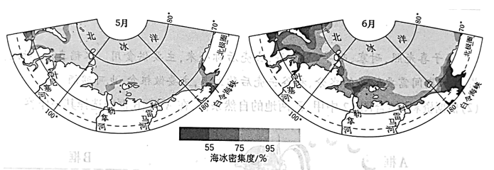
23. 北极地区的海冰（ ）
A. 是企鹅觅食的保障B. 集中在大陆的边缘
C. 暖季时分布范围广D. 极夜期间冰层坚厚
24. 与5月相比，6月（ ）
A. 叶尼塞河河口海冰密集度增大B. 勒拿河河口海冰的融化量增大
C. 科雷马河河口海冰融化量减小D. 白令海峡北部的海冰没有变化
25. 与图示地区海冰融化有关的是（ ）
①纬度位置②季节③海拔④河流
A. ①②③B. ①②④C. ①③④D. ②③④
【答案】23. D 24. B 25. B
【解析】
【23题详解】
企鹅是南极洲的特有动物，北极地区的海冰是北极熊觅食的保障，A错误。北极地区的海冰主要在北冰洋，B错误。暖季时气温高，分布范围小，C错误。极夜期间是冬季，气温低，冰层坚厚，D正确。故选D。
24题详解】
与5月相比，6月叶尼塞河河口海冰密集度降低，A错误。勒拿河、科雷马河河口海冰的融化量增大，B正确、C错误。白令海峡北部的海冰密度降低，D错误。故选B。
【25题详解】
与图示地区海冰融化有关的是：①纬度位置，纬度低，气温高，融化多；②季节，夏季多，冬季少；④河流，读图可知，河流的入海口融冰多，①②④正确。虽然海拔高度对气温有一定影响，海拔越高，气温越低。但是海冰主要分布在北极和南极地区，这些地区的海拔相对较低，海冰融化与海拔关系不大，③错误。故选B。
【点睛】海冰是指在海洋表面结冰的现象，它的形成和融化主要受到以下几个因素的影响：1. 气温：气温是影响海冰形成和融化的最直接因素。当气温低于冰点时，海水开始结冰；当气温升高，海冰开始融化。2. 海水温度和盐度：海水温度和盐度的变化会影响海冰的形成和融化过程。一般来说，盐度较高的海水结冰点会降低，而温度较高的海水需要更长时间才能结冰。反之，盐度较做岁物低、温度较低纯液的海水更容易结冰。3. 海洋环流：海洋环流会将热量从低纬度地区输送到高纬度地区，影响海冰的分布和融化。例如，北大西洋暖流对北极地区的海冰融化有很大影响。4. 风力：风力会改变海冰的分布和厚度。强风可以将海冰推向一侧，使其堆积变厚；而微风则会减缓海冰的融化速度等。
第二部分
本部分共4题，共45分。
古都赓续新篇
26. 北京是著名古都和历史文化名城，也是现代化大都市。围绕新时代北京建设新成就，同学们开展学习交流。左图为北京市简图。右图为2015-2020年北京市再生水利用量统计图。阅读图文资料，回答下列问题。
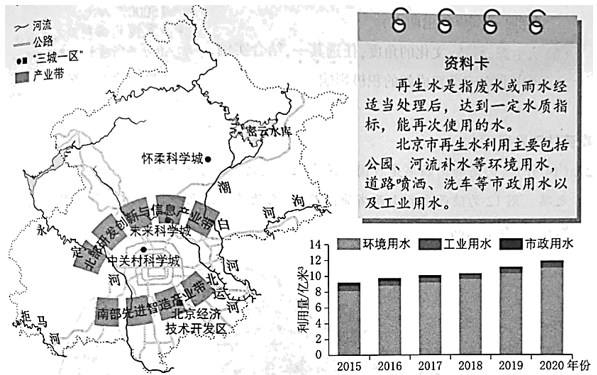
主题一生态之城
北京市水资源短缺，部分河段曾经干涸、污染严重。经过综合治理，多条河流实现全线水流贯通入海，水清岸绿，其中再生水功不可没。
（1）图中，北京市主要河流有____河、潮白河、北运河、拒马河、泃河等。
（2）自2015年以来，北京市再生水利用量呈现____趋势，其中，利用量最多的是____用水。再生水已经成为北京市供水的重要来源。
主题二科技之城
北京是国家高新技术产业的高地，以“三城一区”为主平台打造两大产业带，发挥科技示范引领作用。
（3）“三城一区”与两大产业带相互支撑，共同发展。北京市主要依托____,打造北部研发创新与信息产业带；主要依托____打造南部先进智造产业带。（将数字序号填写在对应的横线上）
①北京经济技术开发区②中关村科学城、未来科学城、怀柔科学城
（4）建设“三城一区，加快推进高新技术产业发展，这最能体现出北京是全国的（ ）（单项选择）
A. 政治中心B. 文化中心C. 科技创新中心D. 国际交往中心
主题三文化之城
博物馆以征集、保护、研究、传播并展出具有代表性的物质及非物质文化遗产为主要形式，为公众提供知识、教育和学习机会。北京市政府制定规划，积极推进“博物馆之城”建设。
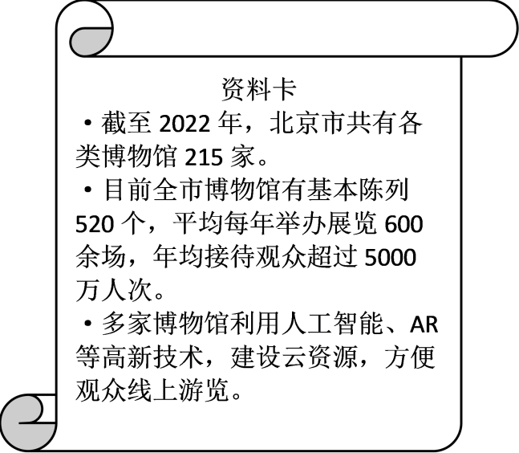
（5）依据资料，概括北京市建设“博物馆之城”的有利条件。
（6）从生态科技、文化的角度，任选其一，结合实例，说出北京建设新成就的积极影响。
【答案】（1）永定 （2） ①. 上升 ②. 环境
（3） ①. ② ②. ① （4）C
（5）博物馆数量多，基础设施完善、年接待能力强，技术先进，方便线上游览等
（6）生态科技方面：生态之城，北京经过综合治理，多条河流实现全线水流贯通入海，水清岸绿；“三城一区”与两大产业带相互支撑，共同发展；多家博物馆利用人工智能、AR等高新技术，建设云资源，方便观众线上游览，有利于为公众提供知识、教育和学习的机会，同时节约资源；文化方面：博物馆以征集、保护、研究、传播并展出具有代表性的物质及非物质文化遗产为主要形式，北京“博物馆之城”的建设促进了文化的传播等。
【解析】
【分析】本题以北京为材料，设置六道小题。涉及北京的生态：河流及用水情况；科技之城：三城一区的建设；文化之城：“博物馆之城”的有利条件等知识点，考查学生对相关知识的掌握能力。
【小问1详解】
由图可知，北京市主要河流有永定河（西部）、潮白河、北运河、拒马河、泃河等。
【小问2详解】
由2015-2020年北京市再生水利用量统计图可知，自2015年以来，北京市再生水利用量呈现逐年上升的趋势，其中，利用量最多的是环境用水（公园、河流补水等）。由资料卡可知，再生水已经成为北京市供水的重要来源。
【小问3详解】
“三城一区”与两大产业带相互支撑，共同发展。北京是国家高新技术产业的高地，以“三城一区”为主平台打造两大产业带，发挥科技示范引领作用。由北京简图可知，北京市主要依托北部的②中关村科学城、未来科学城、怀柔科学城，打造北部研发创新与信息产业带；主要依托南部的①北京经济技术开发，打造南部先进智造产业带。
【小问4详解】
建设“三城一区，加快推进高新技术产业发展，这最能体现出北京是全国的科技创新中心这一职能，C符合题意；政治中心、 文化中心、 国际交往中心体现不明显，排除ABD。故选C。
【小问5详解】
由资料卡可归纳：北京的博物馆数量多（215家），基础设施完善、年接待能力强（基本陈列520个，平均每年举办展览600万人次，年均接待观众超过5000万人次），技术先进、方便线上游览（利用人工智能、AR等高新技术）等。
【小问6详解】
本题可从三个主题入手，依次体现了生态、科技和文化方面对北京城市建设的积极影响。生态科技方面：生态之城，北京经过综合治理，多条河流实现全线水流贯通入海，水清岸绿；“三城一区”与两大产业带相互支撑，共同发展；多家博物馆利用人工智能、AR等高新技术，建设云资源，方便观众线上游览，有利于为公众提供知识、教育和学习的机会，同时节约资源；文化方面：博物馆以征集、保护、研究、传播并展出具有代表性的物质及非物质文化遗产为主要形式，北京“博物馆之城”的建设促进了文化的传播等。
秦晋转型发展
27. 陕西省和山西省是我国传统农业和能源大省，近年来两省积极探索高质量发展之路。图为陕西省和山西省简图及甲、乙两地气温曲线和降水量柱状图。阅读图文资料，回答下列问题。
两省在发展工业的过程中，注重生态环境建设，如通过园林绿化等，将部分废矿区变身为绿树环绕的公园；加大科研力度，如研制出可应用于折叠屏手机的“手撕钢”；积极推动多元化发展，如发展航空航天等高新技术产业。
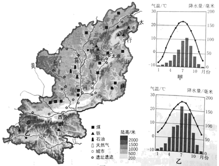
（1）陕西省简称____，山西省行政中心是____。两省有丰富的____、石油、天然气等能源矿产，正努力实现传统能源工业转型升级。根据资料，将“环境治理”“提高经济效益”“技术研发“填入框图中相应的位置。
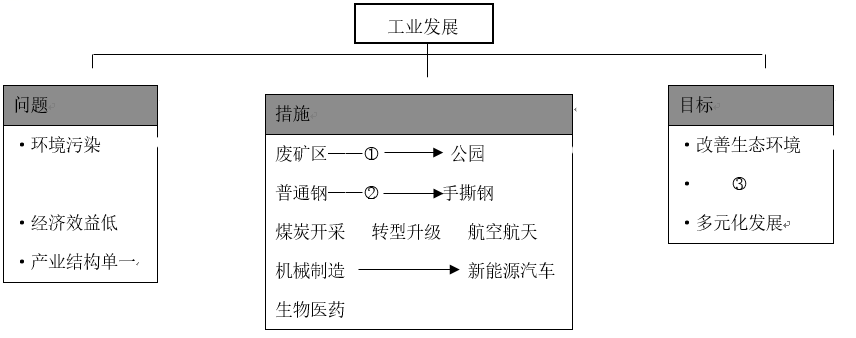
① ________②________③________
谷子喜光照，耐寒、耐旱、耐贫瘠，去壳后称小米，主要供食用。水稻喜温，耐湿、耐热，生长期间需要较多的水分，稻谷去壳后称大米，主要做粮食，也可酿酒。
（2）根据资料，结合图中甲、乙两地的自然条件，在A框、B框中选择其一作答。
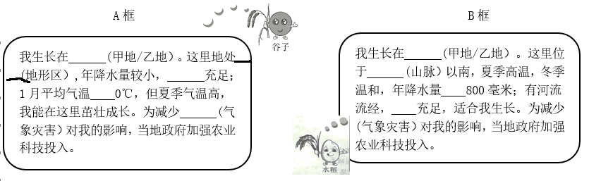
A框： 我生长在_____，属于_____地形区，年降水量较小, _____充足，1月平均气温_____0℃，但夏季气温高，我能在这里茁壮成长，为减少_____对我的影响，当地政府加强农业和科技投入。
B框：我国生长在_____，这里位于_____以南，夏季高温，冬季温和，年降水量_____800毫米，有河流流经，_____充足，适合我生长。为了减少_____对我的影响，当地政府加强农业和科技投入。
（3）有人说，陕西省和山西省应将旅游业作为重点发展方向。结合实例，联系所学简要说明你的观点。
【答案】（1） ①. 陕或秦 ②. 太原 ③. 煤炭 ④. 环境治理 ⑤. 技术研发 ⑥. 提高经济效益
（2） ①. 甲地 ②. 黄土高原 ③. 光照 ④. 低于 ⑤. 寒潮 ⑥. 乙地 ⑦. 秦岭 ⑧. 大于 ⑨. 水源 ⑩. 台风
（3）本题属于开放性题目，要先表明观点，举出实例，说明理由。赞成，主要从促就业、基础设施建设等说明理由。反对，主要从产业链来分析。
【解析】
【分析】本大题以陕西省和山西省简图及两地气温曲线和降水量柱状图为材料，涉及省级行政区的简称、产业结构的调整、气候类型的判读和农业等相关内容，考查学生掌握课本知识的能力和综合思维的地理素养。
【小问1详解】
陕西省简称陕或秦，山西省行政中心是太原。两省有丰富的煤炭、石油、天然气等能源矿产，正努力实现传统能源工业转型升级。随着工业的发展，产生了环境污染、经济效益低、产业机构单一等问题，采取的措施是：针对废矿区，进行①环境治理，改造成公园，改善生态环境；针对普通钢产业，进行②技术研发，变成手撕钢，③提高经济效益。由原来的煤炭开采，转型升级为航空航天，由机械制造转型为新能源汽车、生物医药等产业，实现多元化发展。
【小问2详解】
本题为二选一作答。谷子喜光照，耐寒、耐旱、耐贫瘠，去壳后称小米，主要供食用。水稻喜温，耐湿、耐热，生长期间需要较多的水分，稻谷去壳后称大米，主要做粮食，也可酿酒。读图可知，甲地夏季高温多雨，冬季寒冷干燥，属于温带季风气候，乙地夏季高温多雨、冬季低温少雨，属于亚热带季风气候。A框，种植谷子。我生长在甲地，属于黄土高原地形区，年降水量较小，光照充足，1月平均气温低于0℃，但夏季气温高，我能在这里茁壮成长，为减少寒潮对我的影响，当地政府加强农业和科技投入。B框种植水稻：我国生长在乙地，这里位于秦岭以南，夏季高温，冬季温和，年降水量大于800毫米，有河流流经，水源充足，适合我生长。为了减少台风对我的影响，当地政府加强农业和科技投入。
【小问3详解】
本题属于开放性的题目。要先表明态度，再说明理由。我赞成，以陕西西安为例子，西安通过积极发展旅游业，促进当地居民的就业，增加财政收入，促进基础设施的建设，促进产业的转型升级，优化了生态环境。或我不赞成。当地煤炭、电力等产业发达，应该大力发展煤炭、化工产业，确保东部地区的能源和原料的需求等。
比较分析大洲
28. 通过区域比较和区域分析可以认识区城整体特征和内部差异。左图为世界七大洲面积及平均海拔统计图，右图为欧洲地形图。阅读图文资料，回答下列问题。
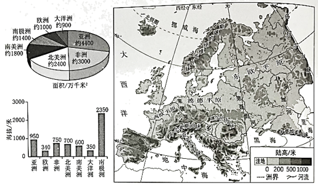
（1）七大洲中，欧洲面积居第____位，平均海拔最____；欧洲是工业革命的发源地，经济发展水平____，是世界人口稠密区。
（2）自然环境对人口分布有重要影响，通过分析欧洲的自然环境，认识其人口分布的差异。完成下列框图。
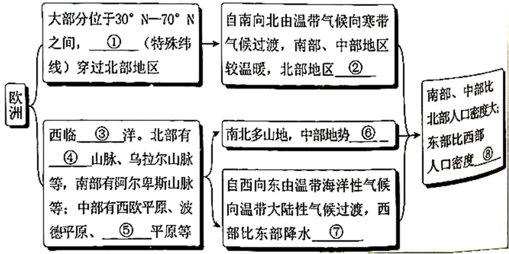
① _________； ②_________；③_________；④_________；
⑤_________；⑥_________；⑦_________；⑧_________。
【答案】（1） ①. 六 ②. 低 ③. 高
（2） ①. 北极圈 ②. 较寒冷 ③. 大西 ④. 斯堪 纳维亚 ⑤. 东欧 ⑥. 较低 ⑦. 丰富 ⑧. 小
纳维亚 ⑤. 东欧 ⑥. 较低 ⑦. 丰富 ⑧. 小
【解析】
【分析】本大题以世界七大洲面积及平均海拔统计图、欧洲地形图为材料，涉及欧洲的概况、地形、气候、人口分布等相关内容，考查学生掌握课本知识的能力和综合思维的地理素养。
【小问1详解】
七大洲按面积排列分别为亚洲、非洲、北美洲、南美洲、南极洲、欧洲、大洋洲。七大洲中，欧洲面积居第六位，欧洲地形以平原为主，是平均海拔最低的大洲。欧洲是工业革命的发源地，经济发展水平高，是世界发达国家数量最多的大洲，是世界人口稠密区。
【小问2详解】
读表，欧洲大部分位于30-70°N之间，①北极圈穿越北部地区，大部分属于北温带，少部分属于北寒带。欧洲自南向北有温带气候向寒带气候过渡，南部、中部地区较温暖，北部地区②较寒冷。欧洲西邻③大西洋，北部有④斯堪的纳维亚山脉，乌拉尔山脉等，南部有阿尔卑斯山脉等，中部有西欧平原、波德平原和⑤东欧平原等。由于南北多山地，中部地势⑥较低，自西向东由温带海洋性气候向温带大陆性气候过渡，西部比东部降水⑦丰富。南部、中部比北部人口密度大，东部比西部人口密度⑧小。
中加共赴未来
29. 加蓬与中国虽远隔千山万水，两国友谊却源远流长。图为加蓬简图。阅读图文资料，回答下列问题。
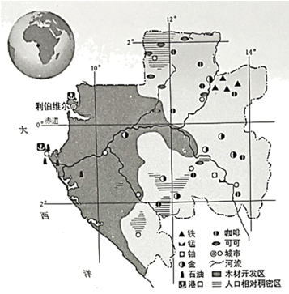
（1）加蓬位于非洲西部，首都利伯维尔的经纬度约为____N,9.50____。加蓬地势总体呈____。人口相对稠密区主要在海拔较高的地区，这是因为____。
（2）加蓬矿产资源丰富，石油主要分布在____地区；位于赤道附近，热量充足，降水____，森林资源丰富；当地大量种植可可、____等热带经济作物。
（3）目前，中加两国开展经济合作，加蓬向中国出口石油、锰矿和木材等，中国可以（ ）。（双项选择）
A. 为加蓬提供资源加工的技术B. 参与加蓬的基础设施建设
C. 从加蓬进口机电产品、钢铁等D. 向加蓬出口初级农矿产品
【答案】（1） ①. 0.5° ②. °E ③. 东高西低 ④. 海拔高，气候凉爽
（2） ①. 西部沿海 ②. 丰沛 ③. 咖啡 （3）AB
【解析】
【分析】本大题以加蓬简图为材料，设置三个小题，涉及加蓬的地理位置、人口分布、矿产、中加合作等相关内容，考查学生掌握课本知识的能力和综合思维的地理素养。
【小问1详解】
经度度数向东变大为东经，经度度数向西变大为西经；纬度度数向北变大为北纬，纬度度数向南变大为南纬。读图可知，加蓬位于非洲西部，首都利伯维尔的经纬度约为0.5°N，9.50°E。加蓬的河流大多自东向西流，故加蓬地势总体是东高西低。人口相对稠密区主要在海拔较高的地区，这是因为地处赤道附近，气候炎热，海拔高，气候较凉爽。
【小问2详解】
加蓬矿产资源丰富，石油主要分布在西部沿海地区；位于赤道附近，热量充足，降水丰沛，森林资源丰富；当地大量种植可可、咖啡等热带经济作物，以出口初级农矿产品为主，在国际贸易中处于不利地位。
【小问3详解】
中国资金、技术、管理经验丰富，加蓬矿产资源丰富。目前，中加两国开展经济合作，中国可以向加蓬出口机电产品、钢铁等，加蓬向中国出口石油、锰矿和木材等初级农矿产品，中国可以为加蓬提供资源加工的技术、参与加蓬的基础设施建设，AB正确、CD错误。故选AB。